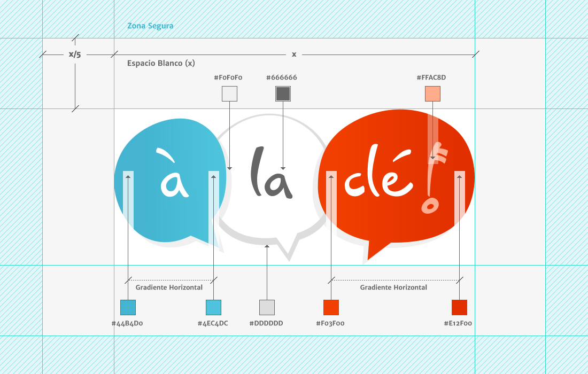
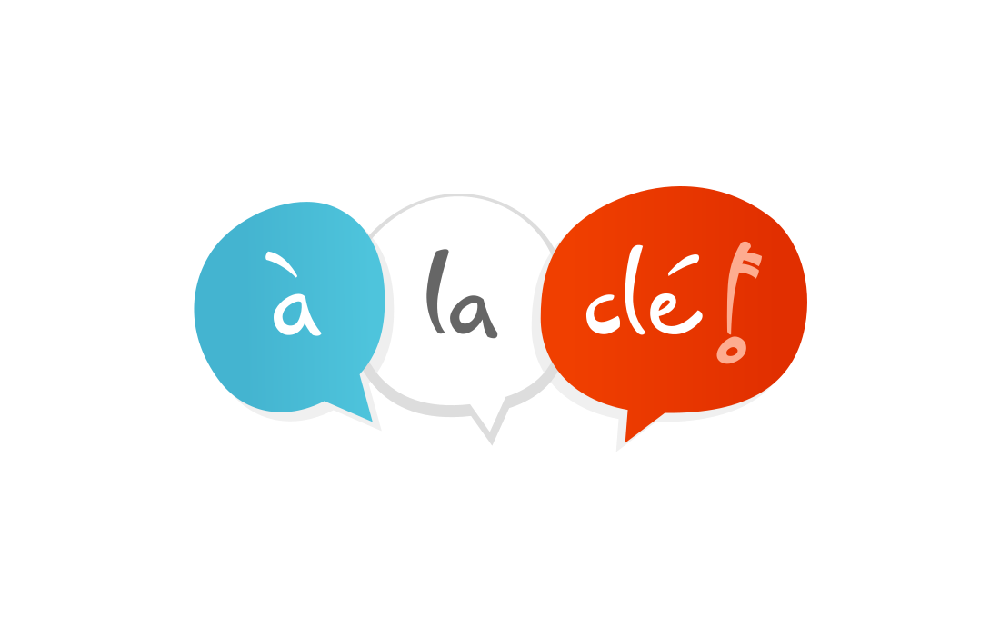
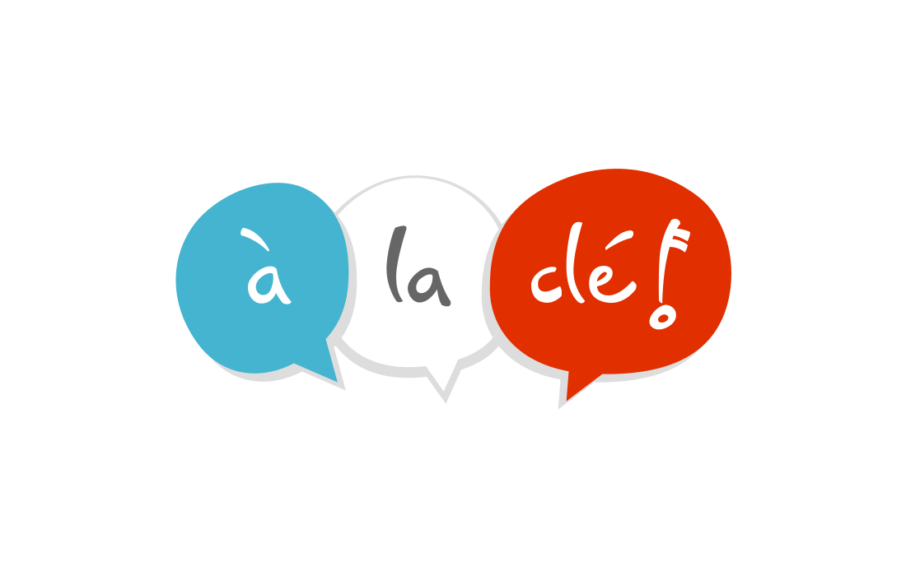
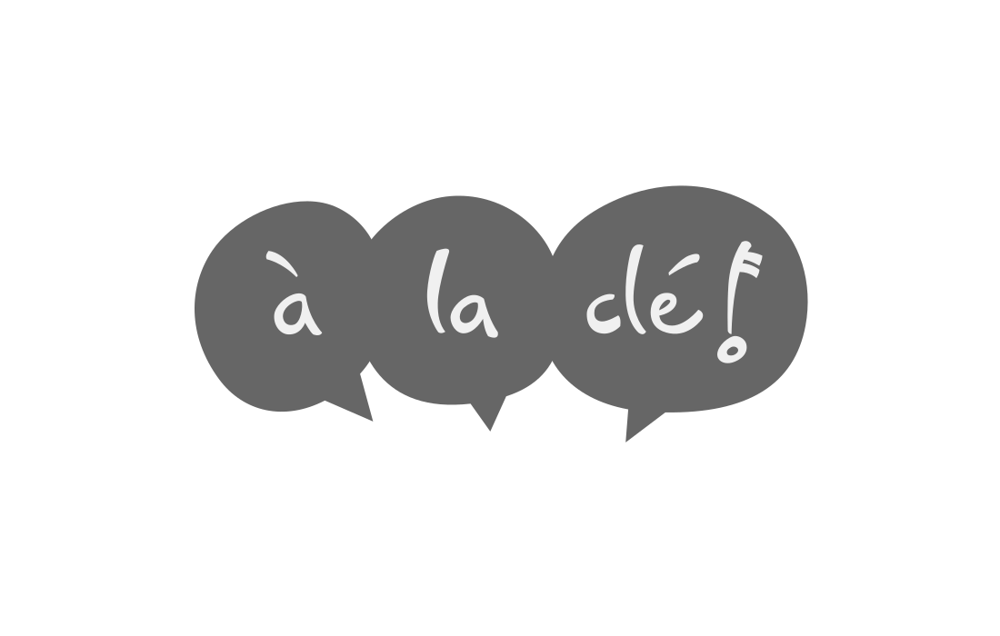
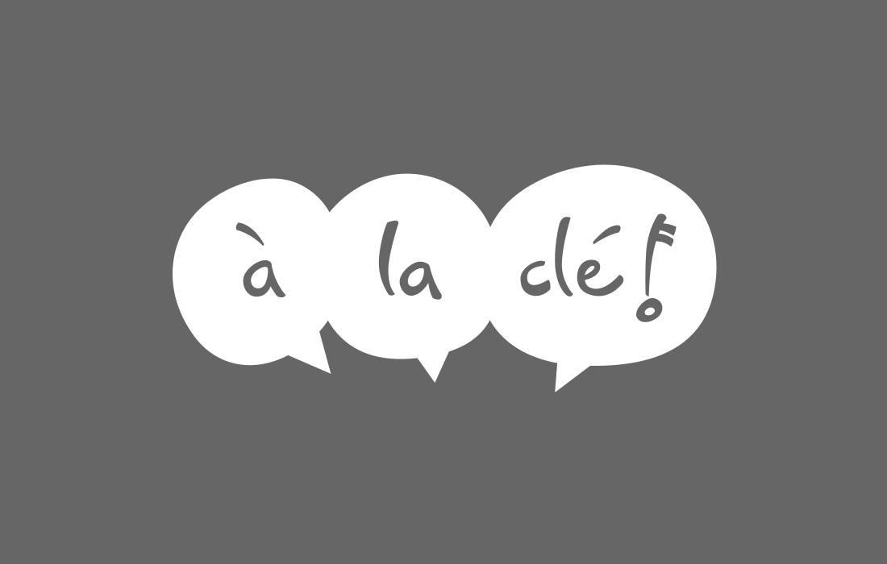

La zona azul rayada indica la zona segura, cualquier otro elemento
gráfico o visual puede ser posicionado de forma segura hasta
el límite marcado por la zona adjacente de color gris claro.
El area marcada con el color gris claro indica el espacio vacio blanco,
Este area debe permanecer libre de cualquier otro elemento
gráfico o visual.
El espacio mínimo libre (espacio vacio o blanco) requerido es establecido
por el tamaño de un quinto de 'x' (x/5) donde 'x'
es igual al ancho total del logotipo.
Este es el logo primario a usar siempre que sea posible el cual incluye todos los matices de color y gradientes.

Esta es la versión usando colores planos y puede ser usado en entornos donde pueda requerirse una estetica más limpia o clara.

Version monocromática para ser usada en medios con limitaciones como p.ej. en impresiones blanco y negro o Fax.

Versión monocromático negativa para ser usado sobre fondos oscuros de baja luminosidad.

Logotipo Primario
Logo Auxiliar de colores planos
Logo Monocromático Positivo
Logo Monocromático Negativo
La exacta reproducción del conjunto de colores establecidos en la marca es esencial para comunicar un mensaje claro y consistente de la imagen gráfica de la compañia. Los colores establecidos en el sistema CMYK (Cian, Magenta, Amarillo, Negro) deberán ser usados siempre que sea posible, con sus equivalentes RGB/HEX dependiendo del medio final o proceso de impresión (el correspondiente color Pantone esta anotado como referencia más próxima a cada color de la paleta). Blanco y negro pueden ser aceptados como colores acentuadores en adicción a los colores dentro del esquema asignado.
| HEX | RGB | CMYK | Ref. Equiv. de Color Pantone | ||
|---|---|---|---|---|---|
| Color de logotipo primario — Azul | #44B4D0 | 68 / 180 / 208 | 66 / 9 / 14 / 0 | Solid Coated 631 C | |
| Color de logotipo secundario — Rojo | #E12F00 | 225 / 47 / 0 | 6 / 94 / 100 / 1 | Solid Coated 172 C | |
| Tercer color de logotipo — Blanco | #FFFFFF | 225 / 255 / 255 | 0 / 0 / 0 / 0 | PANTONE 11-0601 TCX |
| HEX | RGB | CMYK | Ref. Equiv. de Color Pantone | ||
|---|---|---|---|---|---|
| — Variación clara de color primario | #4EC4DC | 78 / 196 / 220 | 61 / 1 / 12 / 0 | Solid Coated 637 C | |
| — Variación clara de color secundario | #F03F00 | 240 / 63 / 0 | 0 / 90 / 100 / 0 | Solid Coated 172 C | |
| — Variación más clara de color secundario | #FFAC8D | 255 / 172 / 141 | 0 / 39 / 41 / 0 | Solid Coated 1625 C |
| HEX | RGB | CMYK | Ref. Equiv. de Color Pantone | ||
|---|---|---|---|---|---|
| Negro | #000000 | 0 / 0 / 0 | 75 / 68 / 67 / 90 | Solid Coated 426 C | |
| Gris Oscuro | #666666 | 102 / 102 / 102 | 60 / 51 / 51 / 20 | Solid Coated Color Gray 10 C | |
| Gris Medio | #DDDDDD | 221 / 221 / 221 | 12 / 9 / 10 / 0 | Solid Coated Color Gray 1 C | |
| Gris Claro | #F0F0F0 | 240 / 240 / 240 | 4 / 3 / 3 / 0 | Solid Coated 7541 C | |
| Blanco | #FFFFFF | 225 / 255 / 255 | 0 / 0 / 0 / 0 | PANTONE 11-0601 TCX |
| HEX | RGB | CMYK | Ref. Equiv. de Color Pantone | ||
|---|---|---|---|---|---|
| Color Azul - Francofonia | #44B4D0 | 68 / 180 / 208 | 66 / 9 / 14 / 0 | Solid Coated 631 C | |
| Color Rojo - Francofonia | #E12F00 | 225 / 47 / 0 | 6 / 94 / 100 / 1 | Solid Coated 172 C | |
| Color Violeta - Francofonia | #86006C | 134 / 0 / 108 | 52 / 100 / 25 / 10 | Solid Coated 2425 C | |
| Color Verde - Francofonia | #2C8B95 | 44 / 139 / 149 | 80 / 30 / 38 / 3 | Solid Coated 5483 C | |
| Color Amarillo - Francofonia | #F0DF00 | 240 / 223 / 0 | 9 / 5 / 100 / 0 | Solid Coated 107 C |
La familia tipográfica a usar sera principalmente Merriweather (variación con serifa) junto a la usada de forma secundaria Merriweather Sans para complementar a la primaria. Estas han sido seleccionadas para representar lo mejor posible la imagen de marca y estas deberan ser simpre usadas para establecer una consistencia. El reemplazo de fuentes por otras alternativas no deberia ocurrir bajo ninguna circunstancia.
Tanto la familia de fuente Merriweather como su auxiliar Merriweather Sans contienen
cuatro diferentes grosores de fuente:
Light, Regular, Bold y Heavy (300, 400, 700 & 900),
asi mismo cada una de ellas contiene su correspondiente estilo en cursivas (itálica).
Esta variedad de grosores en las diferentes familias asegura una amplia flexibilidad y consistencia
para un futuro crecimiento de la identidad de marca de à la clé.
Ambas familias son de uso libre liberadas bajo una licencia SIL Open Font License, 1.1 por su creador Eben Sorkin ( Repositorio oficial de Merriweather )
La mejor manera de usar la tipografía en documentos web es haciendo uso de los archivos alojados en los servidores de Google desde su servicio de tipografias web incluyendo el código que ellos mismos proporcionan. ( Información extendida : Google Fonts )
<link href="http://fonts.googleapis.com/css?family=Merriweather:300,400,700,900,300italic,400italic,700italic,900italic"
rel="stylesheet" type="text/css" />
<link href="http://fonts.googleapis.com/css?family=Merriweather+Sans:400,300,300italic,400italic,700,700italic,800,800italic"
rel="stylesheet" type="text/css" />{kind=link}
{kind=link}
{kind=link}
{kind=link}
{kind=link}
{kind=link}
{kind=link}
{kind=link}